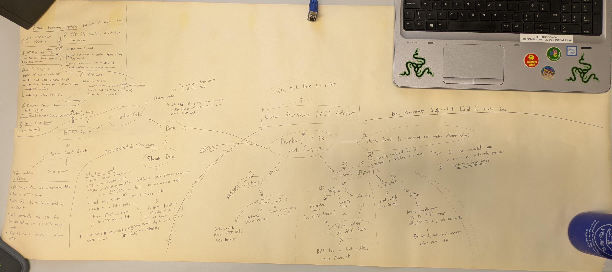
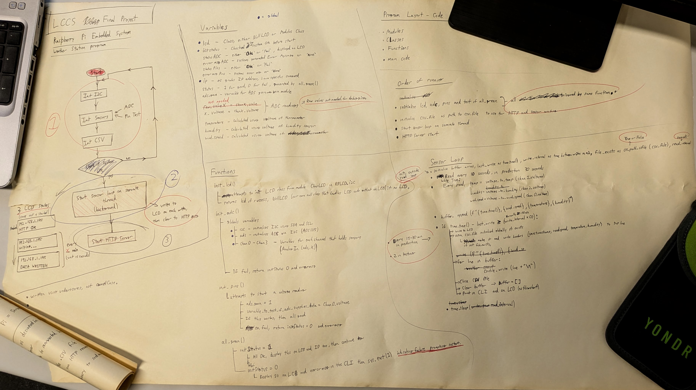
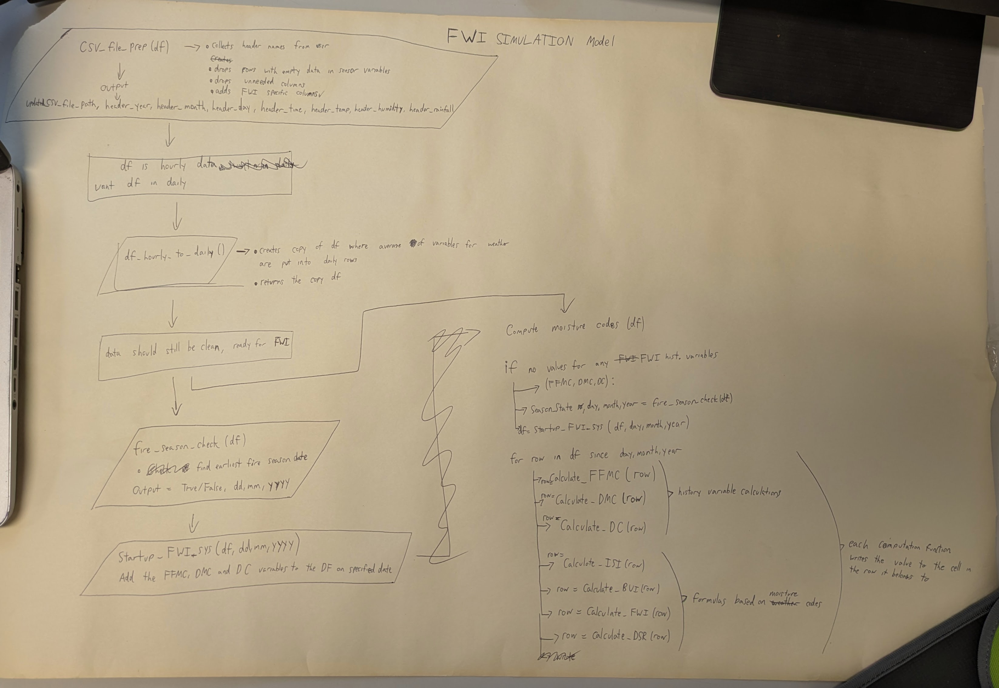

Before the planning stage (remembering my decisions from the investigation stage), I decided to throw some ideas onto a page before more decisions were made
Initial Basic Requirements Brainstorm (Right click and open in new tab for detail)

Initial Embedded System Plan

After reflection, I could proceed to design.
BR1
To comply with Basic Requirement 1, and my decision for a Raspberry Pi based system, I decided that I would have Rainfall (digital), Temperature, Humidity and Windspeed (all analog) as my sensor-collected weather variables. These variables are used to calculate the FWI in the FWI model I investigated earlier, which is my reasoning behind using these variables.
An issue I realised during planning was that the Raspberry Pi requires an ADC (Analog to Digital Converter), which the microbit already has. I bought an Adafruit ADS1115 and used it via I2C (Inter-Integrated Circuit) to record analog sensors once I realised this issue.
BR1 additionally required that I generate a primary output, so I decided to use an I2C LCD. I2C is a method that allows communication between chips via the two universal pins, so the LCD and the ADC were connected to the same I2C pins on the Raspberry Pi.
BR2
BR2 requires that the embedded system collects and stores environmental data. To do this, I have a function called sensor_loop in my embedded system program that collects sensor data every 5 seconds.
Personally I decided to design BR2 around reducing Disk I/O in order to increase the lifetime of a system drive, so the code writes every 5 seconds to a list (buffer) in the code (located on RAM), and only writes the variable averages to a CSV every hour. Overall, we sacrifice 1 hour maximum of unwritten data loss during power failure to increase disk lifespan through reduced Disk I/O.
For end-users or stakeholders trying to access weather data, I could use the scp (secure copy) command to copy this file to my computer, but that takes too long and requires technical knowledge. Instead, I designed a HTTP server that will serve the latest csv file to whoever requested it (via port 8000 on any web browser)
BR3
BR3 requires that I simulate a process, so I output to LCD and CLI with the temperature sim results every write.
Basic Requirements Conclusion
In conclusion for BR1, BR2 and BR3, I am planning to make a weather station that will collect variables similar to the FWI system, output messages on an LCD and store the CSV file on the station itself, later accessible via HTTP server or local HDMI if network issues arise.
FWI System Brainstorm / Plan

AR1
Moving forward onto AR1, I decided to make a python computer model based on the Canadian Forest Fire Weather Index system. This program will use pandas as the dataframe manipulator and plotly to display the data graphically. The program will collect a CSV file, load it into pandas to clean and run the FWI calculations on each row in the dataframe before Plotly graphs the dataframe.
In order for my data and Canadian weather data to both work, I’ll use the same headers as weather data from Ashcroft, BC in my system’s data.
AR2
For AR2, I will just use the final dataframe from AR1 and change the temperature, wind, humidity and rain to make 4 different what-if scenarios. These can be graphed as subplots on the same graph output to make all data easily readable by end-users and stakeholders, such as researchers.
AR3
AR3 requires that I make the embedded system adapt to changing conditions, so I programmed it to send me alerts via SMTP (email) if any of the weather variables were above a specific threshold at time of CSV write